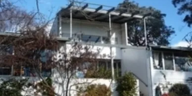
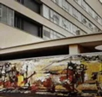
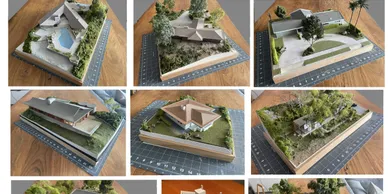

Model Modern: Iconic Design at Miniature Scale
Growing up Modern at Canberra's Round House with Roger Benjamin
Model Modern - Iconic Design at a Miniature Scale
  Manning Clark House Tours
Interior Design, Architecture and Client Collaboration: Margo Lewers and Sydney Ancher, 1930-1965
Model Modern: Iconic Design at a Miniature Scale
Around the Block on Grey St, Deakin
What Lies Beneath: The Tunnels of University House and Hidden ANU
Art and Architecture in the Parliamentary Zone
Art and Architecture at the ANU